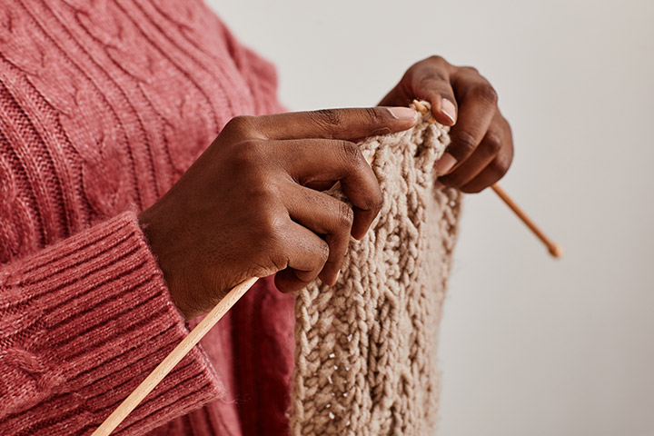
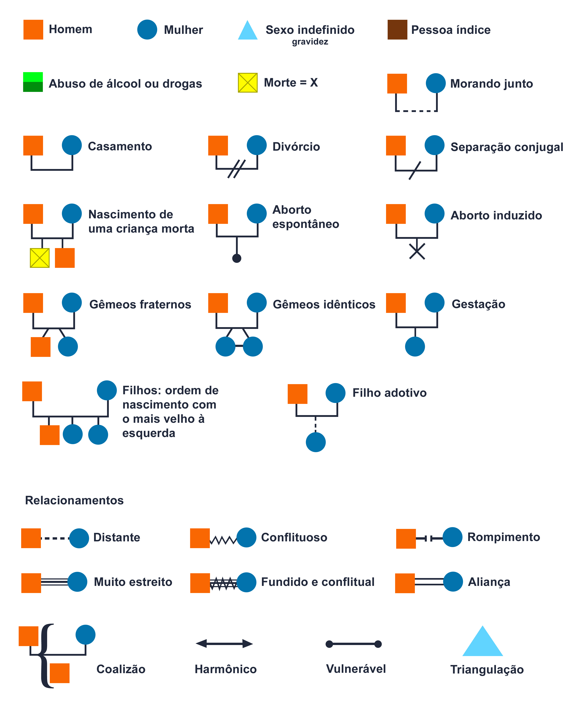
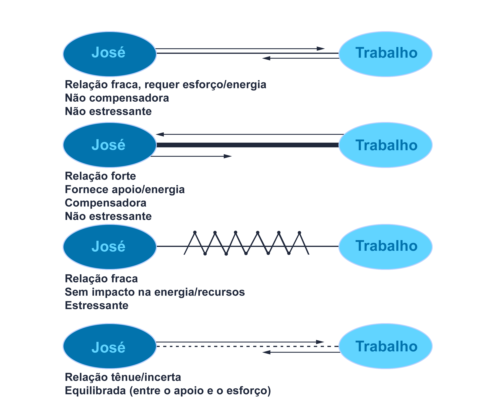

As redes de relações e o apoio social são importantes, particularmente no que se refere às contribuições ao bem-estar de adultos e de pessoas idosas. Salienta-se que as pessoas que possuem uma maior rede e suporte social relatam serem mais satisfeitas com a vida, verificando-se a importância de viver inserido na sociedade, relacionada à sobrevivência.
Módulo 5 | Aula 3 Relacionamentos e qualidade de vida
Tópico 2
Relacionamentos e qualidade de vida: família, espiritualidade, vida social, criatividade, hobby, lazer

Dentre os fatores promotores da qualidade de vida, destacamos os relacionamentos, a família, a vida social, a espiritualidade, os hobbies, o lazer, a criatividade entre outros. Tanto tais fatores quanto as possibilidades de ações voltadas aos mesmos na APS devem ser analisados a partir de sua relação com os determinantes sociais da saúde.
A partir deste preâmbulo convidamos você mais uma vez para refletir, agora, sobre sua qualidade de vida, com a proposta de provocar mudanças no seu modo de vida para a promoção da sua saúde, da saúde da equipe e dos usuários.
Vida social
A vida social (contato com os seus semelhantes em sociedade) e as relações sociais (relacionamento entre duas ou mais pessoas no interior de um grupo social), possui um importante papel no processo de socialização (sociabilidade) e qualidade de vida. Ressalta-se algumas instituições sociais como a família, a escola, o trabalho, a igreja, o estado, entre outras.
Para refletir...
As redes de relações e de apoio social devem ser avaliadas e consideradas para que haja uma efetiva integração dos indivíduos.
Família
A família representa um importante espaço de socialização, com possibilidades para a busca de estratégias de sobrevivência local para a prática da cidadania, e que favorece o desenvolvimento pessoal e coletivo dos seus membros, independentemente dos arranjos apresentados (FERRARI; KALOUSTIAN, 2004).
A abordagem familiar é, antes de tudo, poder ver a pessoa que está com alguma dificuldade a partir de outra “lente”, na qual é possível perceber todo o contexto em que esse problema ocorre. Existem diversas ferramentas que auxiliam a conhecer melhor o contexto familiar.
A observação do histórico familiar pode direcionar as equipes de saúde às estratégias de ações efetivas em saúde.
Existem diferentes instrumentos de avaliação que facilitam a compreensão dos processos e relações familiares, resultando em planejamento de ações de saúde pública. Entre os instrumentos destacamos o genograma e o ecomapa.
Genograma
O GENOGRAMA consiste na ilustração da composição familiar com informações sobre seus membros como gênero, idade, parentesco, doenças, fatores de risco, situação laboral e morte, acrescida da representação das relações entre esses membros, como conflitos e alianças. Para melhor compreensão é importante que sejam ilustradas ao menos três gerações (DIAS, 2012).
O instrumento também permite verificar a interdependência entre os componentes e pode auxiliar na resolução de problemas familiares, facilitando as discussões e possíveis intervenções.

Ecomapa
O ECOMAPA é um diagrama das relações entre a família e a comunidade, demonstra os contatos da família com pessoas, grupos ou instituições, como escolas, serviços de saúde e comunidades religiosas. Os resultados auxiliam na identificação de famílias com poucas conexões com a comunidade, direcionando maior investimento dos profissionais de saúde, em busca da melhoria de seu bem-estar e qualidade de vida destas famílias (NASCIMENTO; ROCHA; HAYES; 2005).

Os dois instrumentos juntos permitem à equipe de saúde o suporte necessário e aos familiares, o repensar de suas relações e a busca de suporte, dentro e fora do núcleo familiar. Com os dados acerca da dinâmica familiar colhidos, os profissionais da saúde podem direcionar suas ações segundo os riscos identificados, buscando medidas e programas que visam à promoção da saúde, considerando as necessidades, os recursos, a cultura da família e as redes de apoio.
Espiritualidade
A espiritualidade deve ser considerada na busca por qualidade de vida: apresenta-se em uma de suas definições como a maneira de estar no mundo, a qual a pessoa sente um senso de conexão com o eu, com os outros e/ou com um poder mais elevado; um senso de significado na vida e transcendência além da vida cotidiana e do sofrimento (WEATHERS; MCCARTHY; COFFEY, 2016).
A espiritualidade pode contribuir com pessoas em várias circunstâncias e é fundamental para a vida em geral, especialmente se tratando da saúde em sua concepção holística. Sua presença e uso podem trazer como resultados a paz de espírito, autorrealização e alívio do sofrimento. Seu papel na medicina e nos cuidados em saúde tem sido cada vez mais reconhecido. As práticas espirituais estão associadas à proteção contra doenças e melhor qualidade de vida, estando ainda associadas à redução da mortalidade e ao aumento da tolerância e redução da intensidade da dor (SOLLGRUBER et al., 2018).
Você já cogitou que muitas vezes as pessoas que buscam as unidades de saúde são vistas como uma “doença que precisa ser consertada” de maneira rápida e barata, em vez de seres humanos com necessidades complexas, incluindo aquelas de natureza espiritual? Como resultado, sentem-se sobrecarregadas pelos inúmeros testes e medicamentos oferecidos, em vez de terem a oportunidade de encontrar seus próprios recursos internos de saúde e auxílio para a cura. As considerações baseadas nas evidências, de que o cuidado espiritual é um componente fundamental da assistência à saúde de alta qualidade, precisam ser reconhecidas pelos profissionais de saúde.
Mediante o desenvolvimento da espiritualidade, é possível encontrar apoio e oportunidades para refletir e superar dificuldades, pois esses elementos podem trazer segurança e conforto aos indivíduos. Esta abordagem pode ser uma importante ferramenta para acolher as demandas dos usuários (NUNES et al., 2017).
Muitas são as dificuldades para uma abordagem da espiritualidade na APS, mesmo que os profissionais deste nível de atenção visualizem sua importância no processo saúde-doença.
A premissa de que as intervenções na APS levam em conta as singularidades e particularidades de cada indivíduo, apoia a abordagem da espiritualidade e/ou religiosidade em qualquer cenário ou oportunidade, de forma holística, como método clínico centrado na pessoa, procurando entender a pessoa/usuário na sua totalidade, envolvendo o contexto proximal ou familiar e o distal ou social (AGUIAR et al., 2017).
Estratégias, como: promoção da escuta ativa e acolhedora, compreensão dos aspectos sociais e culturais da população adstrita e prática de uma clínica ampliada podem satisfazer o desejo do usuário de ser compreendido em sua integralidade.
A equipe de saúde precisa também ser cuidada nesta importante dimensão: precisa ser escutada, acolhida nas suas particularidades, singularidades; necessita ser entendida na sua totalidade.
Lazer
O lazer também tem sido reconhecido como um fenômeno de relevância para a emancipação humana, figurando fortemente como importante estratégia da promoção da saúde. Apesar disto, nos campos da Saúde Pública e a Saúde Coletiva, embora seja frequentemente destacado, é evidente como esse fato é explorado de forma muito superficial, necessitando de reflexão crítica (BACHELADENSKI; MATIELLO; 2010).
Quando se dialoga sobre esta dimensão, muitos profissionais de saúde e/ou usuários dizem: “eu não tenho tempo para isto” ou “minha vida é corrida”; “não tenho condições financeiras para tal”, entre outras expressões. Porém, muita coisa podemos realizar.
As atividades ligadas ao lazer buscam proporcionar meios e condições aos sujeitos para uma reflexão sobre suas condições de vida e sobre a sociedade em que estão inseridos, possibilitando-lhes o acesso e o entendimento deste como manifestação de uma cultura e instrumento de ligação com sua realidade. É o chamado direito social ao lazer.
As atividades de lazer podem ser classificadas em cinco grupos (BACHELADENSKI; MATIELLO, 2010):
Manuais
Manuais
Atividades que podem ser desinteressadas e utilitárias ao mesmo tempo. Por haver manipulação de objetos e produtos, podem constituir-se num hobby ou num trabalho não profissional.
Físicos
Físicos
Neste grupo, o lazer representa uma compensação em detrimento dos compromissos da vida, como na participação em jogos.
Artísticos
Artísticos
Atividades que direcionam o indivíduo para a cultura: como cinema, teatro e museus, exposições, pintura, entre outras.
Intelectuais
Intelectuais
É a informação desinteressada caracterizada como cultura permanente para acompanhar as rápidas transformações da sociedade (jornais, rádios, mídias sociais, entre outras).
Sociais
Sociais
São atividades que favorecem as coletividades e os relacionamentos interpessoais.
Hobby
Um hobby é uma atividade realizada por vontade própria em busca de satisfação e momentos de alegria. Os hobbies desempenham um papel importante na vida das pessoas, ligado à percepção de elementos satisfatórios no cotidiano e a uma vida saudável, à saúde emocional e física. O hobby é integrado à vida cotidiana e geralmente é procurado pelos efeitos agradáveis que proporciona, que contribuem para a melhoria da qualidade de vida.
Tironi et al. (2009), em seus estudos, indicaram que a prevalência de síndrome da estafa profissional (Burnout) entre intensivistas estava fortemente associada, entre outros fatores, ao fato de não ter hobbies. Assim, estudos apontam que a prática de atividades de hobby, definida como a dedicação de mais de três horas semanais a uma atividade de lazer, foi determinada como fator de proteção para o Burnout. (MUÑOZ-CERÓN, 2021).
Como parceiros dos usuários, os profissionais da APS devem proporcionar atividades coletivas para o hobby e lazer, como atividades manuais, físicas, culturais e sociais, que favoreçam as relações sociais e possam ser utilizadas como espaços de acolhimento, vínculo e educação em saúde para o empoderamento dos usuários e melhora em sua qualidade de vida.
Criatividade
format_quoteA mente criativa brinca com os objetos que ama.
Carl Jung
A criatividade pode ser compreendida como um processo no qual existem interações das habilidades cognitivas, características de personalidade e elementos ambientais que facilitam o sujeito a alcançar as descobertas criativas, tornando-se fundamental em várias ocasiões da vida, particularmente em momentos difíceis, como na relação com a saúde e com a doença, assim como nas situações de risco, uma vez que para as pessoas criativas, tais circunstâncias são entendidas como desafios a serem vencidos (ZAVARIZE; WECHSLER, 2012).
Estudos revelam que a sinergia entre criatividade e qualidade de vida é amplamente reconhecida atualmente. Ainda, em nossa sociedade a criatividade tem sido assumida não somente pelo empoderamento do sujeito sobre sua vida e trabalho, mas por gerar ganhos econômicos e sociais.
A Atenção Primária à Saúde pode realizar ações como:
- Identificar a criatividade das pessoas, que então podem gerar ideias, emoções sobre si, sobre os outros. Para tanto é preciso trabalhar o medo que temos de errar, de ser criticado, de sair do lugar comum.
- Um bom começo é proporcionar aos usuários um “show de talentos” utilizando os espaços dos grupos já constituídos, das salas de espera entre outros.
- Incentive com coisas simples como: o varal de poesias, pinturas, desenhos, festival de danças, trabalhos feitos com sucatas entre outros.